Notice d'utilisation de PhyWeb Tracker
Ouverture d'une vidéo
- Cliquer sur le bouton ci-dessous pour ouvrir une vidéo. 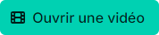
- Sélectionner une vidéo parmi la liste de vidéos proposées ou cliquer sur le bouton ci-dessous pour choisir une vidéo personnelle. 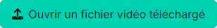
- Pour lire la vidéo, cliquer sur le bouton ci-dessous.
Fixer l'origine des dates
- Revenir à la première image de la vidéo à l'aide du bouton ci-dessous.
- Trouver l'image à partir de laquelle l'étude du mouvement commence en les faisant défiler à l'aide du bouton ci-dessous.
- Noter le numéro de l'image. On prendra comme origine des dates l'instant correspondant à cette image. Pour cela, reporter le numéro de l'image dans la zone de texte ci-dessous. 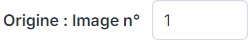
Etablir l'échelle entre la vidéo et la réalité
- Choisir l'orientation des axes en cliquant sur l'un des 4 boutons ci-dessous. 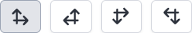
- Placer le repère en cliquant sur la vidéo.
- Pour préciser l'échelle à utiliser, en traçant le segment de référence, cliquer sur le bouton ci-dessous. 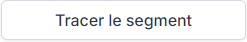
- Cliquer une première fois sur la vidéo pour placer le premier point du segment qui servira d'échelle. Cliquer une seconde fois pour placer le second point du segment
- Entrer la longueur réelle du segment dans la zone de texte ci-dessous. 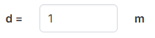
Réaliser le pointage
- Cliquer sur l'onglet mesures. 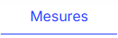
- Activer la loupe en cliquant sur le bouton ci-dessous si nécessaire. 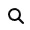
- Cliquer sur l'objet à suivre sur la vidéo. L'image suivante s'affiche automatiquement. Répéter l'opération sur toutes les images.
- En cas d'erreur, on peut supprimer une ligne ou tout le tableau à l'aide des boutons ci-dessous. 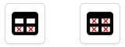
Enregistrer les mesures dans un fichier
- Cliquer sur le bouton ci-dessous. 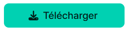
- Choisir le format souhaité. RW3 pour Regressi. CSV pour un tableur ou Python 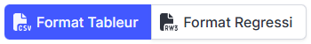
- Donner un nom au fichier.
- Cliquer sur le bouton ci-dessous.